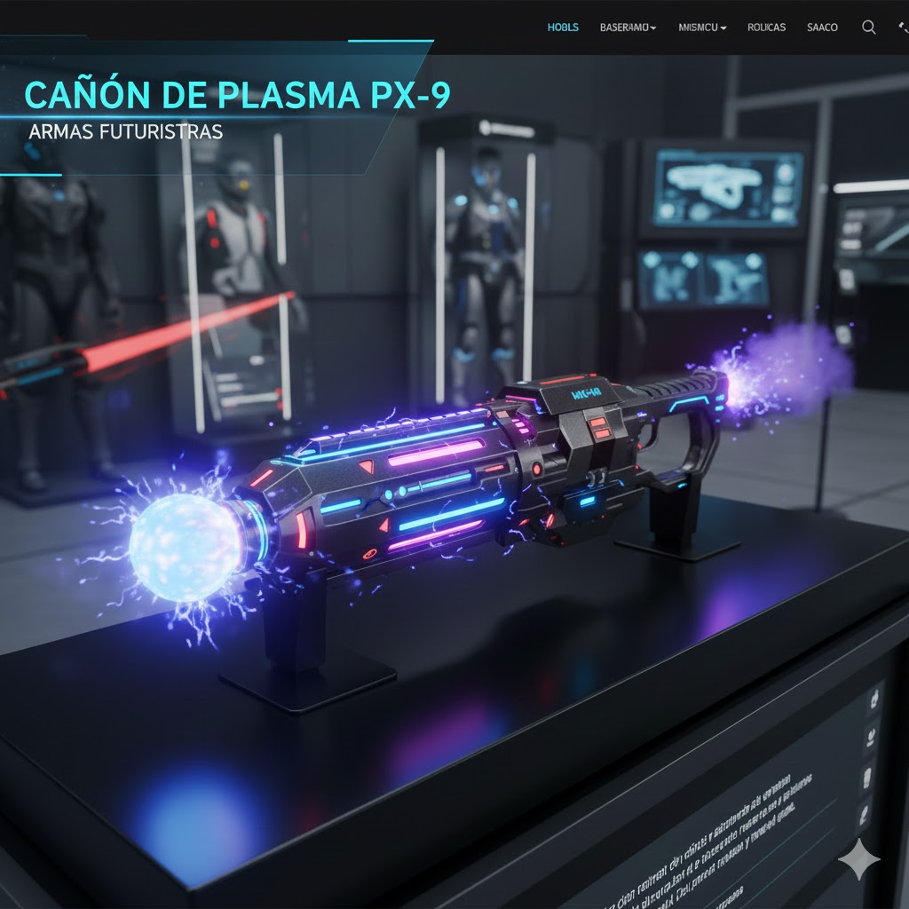

Cañón de Plasma PX-9
Arma de energía de largo alcance

Descripción
El Cañón de Plasma PX-9 es una arma de destrucción masiva diseñada para operaciones de asalto pesado. Genera un haz de plasma ionizado a 5000°C, capaz de derretir blindajes de acero reforzado en segundos. Su sistema de refrigeración por helio líquido permite disparos sostenidos sin sobrecalentamiento.
Características Técnicas
- Temperatura del plasma: 5000°C
- Alcance efectivo: 800 metros
- Fuente de energía: Batería de fusión microcompacta (30 disparos)
- Tiempo de recarga térmica: 8 segundos
- Peso: 4.8 kg
- Modos de disparo: Estándar, Carga máxima, Sostenido
- Refrigeración: Sistema de helio líquido integrado
- Seguridad: Bloqueo biométrico y geolocalización
Formas de Uso
Ideal para:
- Asalto de fortificaciones: Derribar muros y bunkers.
- Defensa planetaria: Neutralizar vehículos blindados.
- Operaciones especiales: Uso en entornos con baja gravedad.
- Entrenamiento simulado: Modo de baja potencia con retroalimentación táctil.